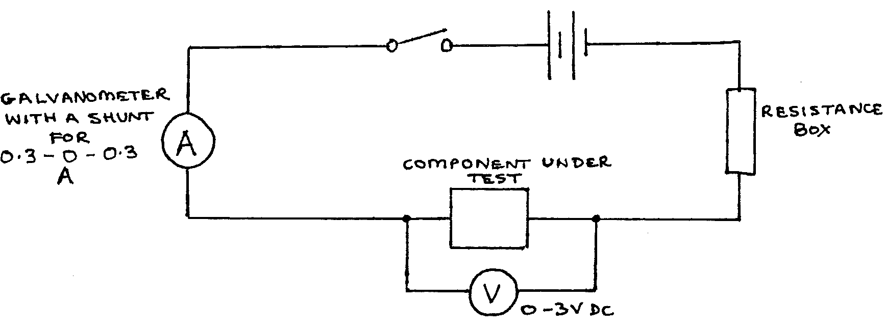
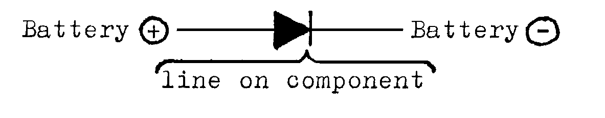

F2-2: Ohmic and Non-Ohmic Conductors¶
Apparatus¶
\(3\text{V}\) battery; galvanometer with shunt for \(0.3-0-0.3\text{A}\); voltmeter (\(0-3\text{Vdc}\)); resistance box; switch; block with crocodile clips to hold component; 7 connecting leads; 1 sheet graph paper.
Components under test:
- Resistance wire
- \(6\text{V}\) bulb in holder
- Copper Sulphate solution with copper electrodes
- Semiconductor diode

Procedure¶
Set up the circuit as above, using component A.
Set the resistance box to \(5\Omega\), close the switch, and read \(V\) and \(I\).
Increase the resistance box resistance to \(10, 20, 50\Omega\), and then \(\infty\Omega\), in each case reading \(V\) and \(I\). Tabulate the readings of \(V\) and \(I\).
Reverse the connections to the component. Repeat steps 2 and 3, recording the values of \(V\) and \(I\) as NEGATIVE values.
Repeat steps 2, 3, and 4, using components B, C, and D in turn. Note that the diode should first be connected into the circuit as follows:

Analysis¶
- Plot all the readings on the same sheet of graph paper, labelling the lines carefully (\(V\) vs. \(I\)).
- Calculate resistance from lines where \(V \propto I\).
- The lines on your graph all follow different paths. For each of the conductors in turn, explain why the line for the conductor has the shape it does (You should refer to the internal structure and properties of the component when you answer this, and use text books for reference).
Questions¶
- What are the properties required of a material used to make resistors?
- Draw a circuit to show how semiconductor diodes can be used to rectify an AC supply.
- Why does a tungsten-filament bulb have such a low efficiency?
- Find the resistance of the shunt in parallel with the galvanometer if the galvanometer alone has a full-scale deflection of \(3\text{mA}\), and an internal resistance of \(10\Omega\).